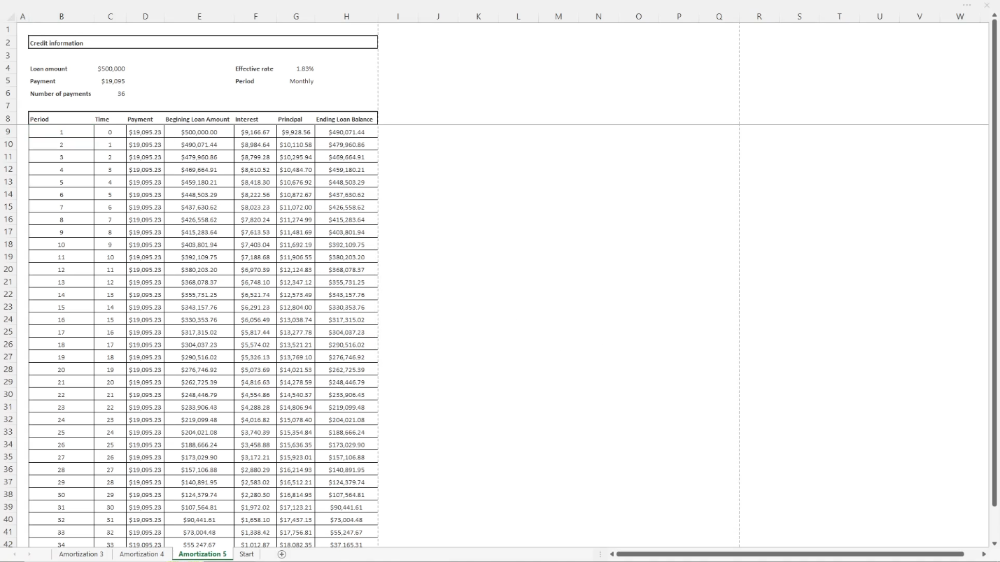
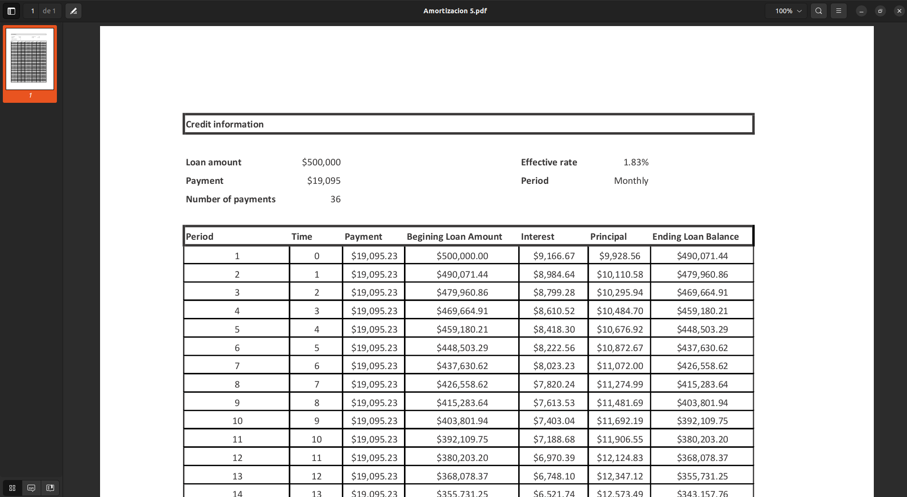

Process automation with Excel and VBA

Objective
This project was made for an actuarial divulgation expo. The expo consists of a conference where actuaries juniors talk about all topics related to actuarial science to the public. Then, the public can go to individual stands for every topic where they can ask specific questions or personal financial questions.The project was made for an amortization stand, the goal was made an easy and fast way to show people how an amortization work and how they can improve his financial and credit decisions.
Functionality
- Payment
- Number of payments
- Loan amount
- Loan amount
- Payment: Is the period obligation, usually calculated and will often remain constant over the term of the loan.
- Number of payments
- Period: Is the frequency of payments, usually monthly or quarterly.
- Interest rate: Percentage of interest that gets applied as interest expense.
- Rate type: You can choose between nominal or effective, usually loans are expressed in nominal rates.


Features
Process automation
The use of VBA Automatic mathematical and actuarial calculation. Creation and modification of spreadsheets and printing of results in cells.
PDF export
Automatic export of PDF files from excel spreadsheets.
Automatic format
Modification of color, font, borders and everything related to the format.
Modern-Looking Form